Glósur · 1 mínByrjaðu á merkinu sem salurinn þekkir. Segðu nafnið þitt, að þú stýrir stofunni, og hvað er framundan í hálftímanum: hver við erum, hvaðan við komum og hvað við erum að gera núna. REYTAL merkið kemur ekki fyrr en á glæru 8, ekki stökkva á undan því. Gulmerkti textinn er það sem á eftir að fylla inn.
Hver er ég
Stutta útgáfan
Fæddur1985 í Vestmannaeyjum
UppalinnÍ Eyjum
LeiðinVestmannaeyjar → Reykjavík → Barcelona → Reykjavík
MenntunBA í markaðsfræði, Barcelona
FjölskyldaSara Henný, þrjú börn og orðinn afi
Býr íGrafarvogi
Glósur · 2 mínÖrstutt, eins og Anna bað um. Eitt skemmtilegt smáatriði er betra en heil ferilskrá. Endaðu á því hvernig þú lentir í vefbransanum, það leiðir beint inn í næstu glæru.
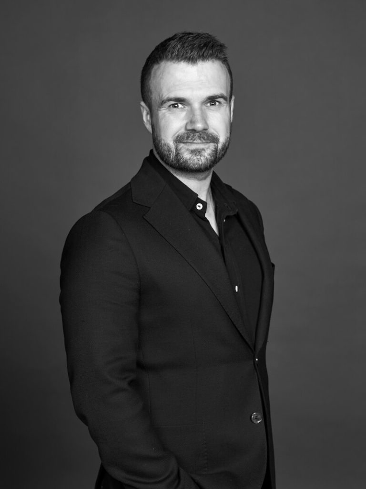
Hvað gerum við
Við erum vefdeild Pipar\TBWA
Öll verkefni sem snúa að vefsíðum, netverslunum og stafrænum lausnum eiga að koma til okkar.
Allt er unnið innanhús, frá fyrsta samtali að því að verkefnið fer í loftið.
Ég sé um daglegan rekstur, set saman teymi á hvert verkefni og held utan um tímalínur.
Og ef viðskiptavinurinn kýs það tökum við líka við rekstrinum eftir að verkefnið fer í loftið.
2017
Vefstofa síðan
200+
Vefir í loftinu
11
Í teyminu í dag
2
Borgir: Reykjavík og Tallinn
Glósur · 2 mínÞungamiðjan og ástæðan fyrir því að þú stendur þarna. Segðu skýrt að öll vefverkefni eigi að koma til okkar og að við vinnum þau eins og innanhúsdeild. Tölurnar fyrir neðan eru bara stærðargráða, slepptu þeim sem eru á reiki. Brúin yfir: en hvernig byrjaði þetta eiginlega?
Upphafið
Hvernig byrjaði ævintýrið?
Um 2010Stofnaði Nordelectronics með skólafélaga mínum
Við seldumRaftæki, sjónvörp, ofna og tölvur, svipað og Elko. Yfir 50.000 vörunúmer
HvarFlakk á milli Eistlands og Íslands, nánast í hverjum mánuði
Þannig kynntumst viðMikk kom inn á þessum árum og hefur verið með okkur síðan. Fleiri úr Tallinn fylgdu á eftir
2014Exit
Það sem sat eftirFólkið. Það er grunnurinn að teyminu okkar í dag
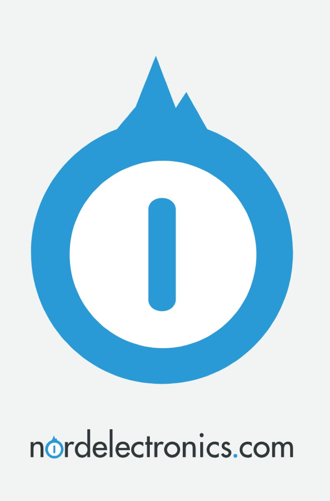
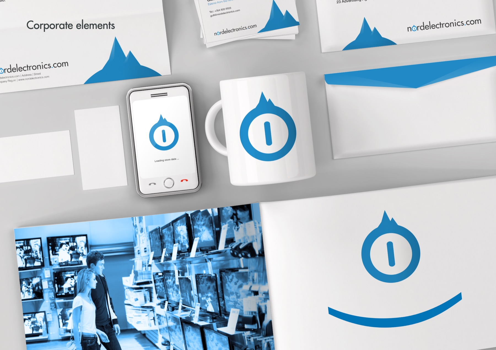
nordelectronics.com
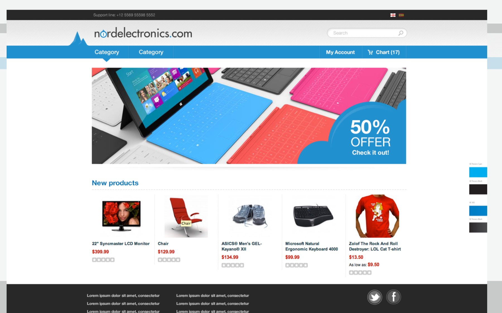
Glósur · 2 mínHér ferðu aftur til 2010. Það sem skiptir máli er hvernig þú kynntist fólkinu, ekki hvað félagið seldi. Eitt atvik er betra en upptalning.
Flakkið
Tallinn, aftur og aftur
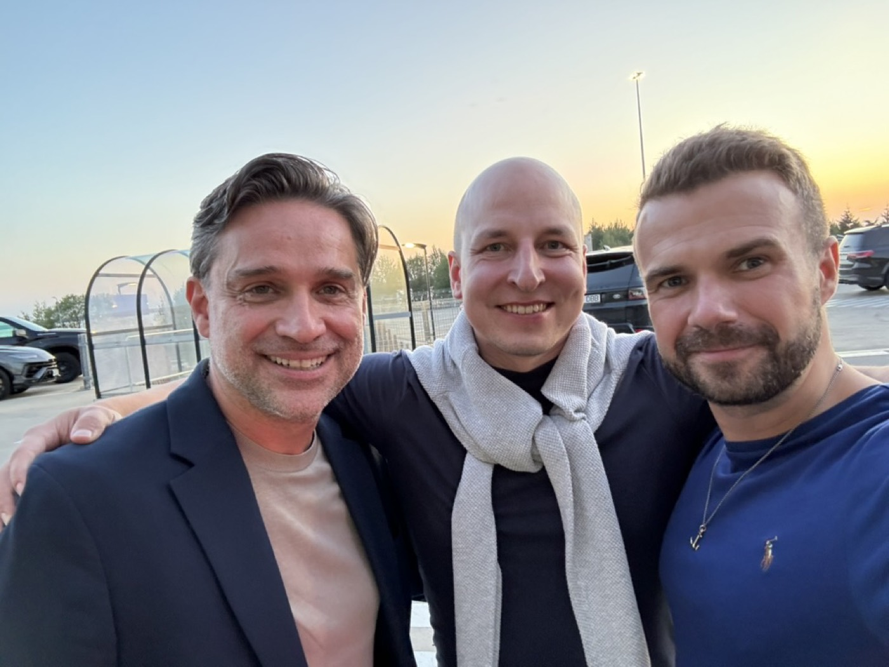
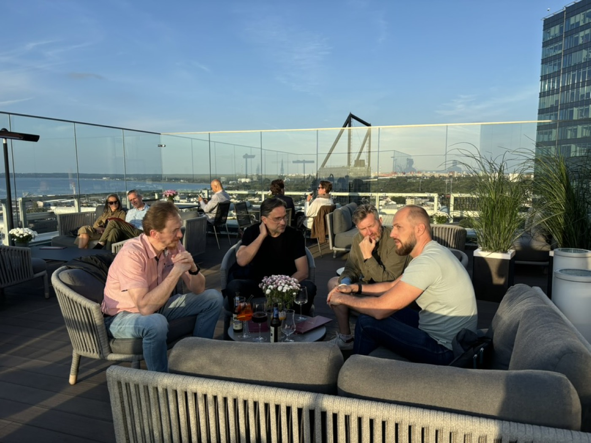
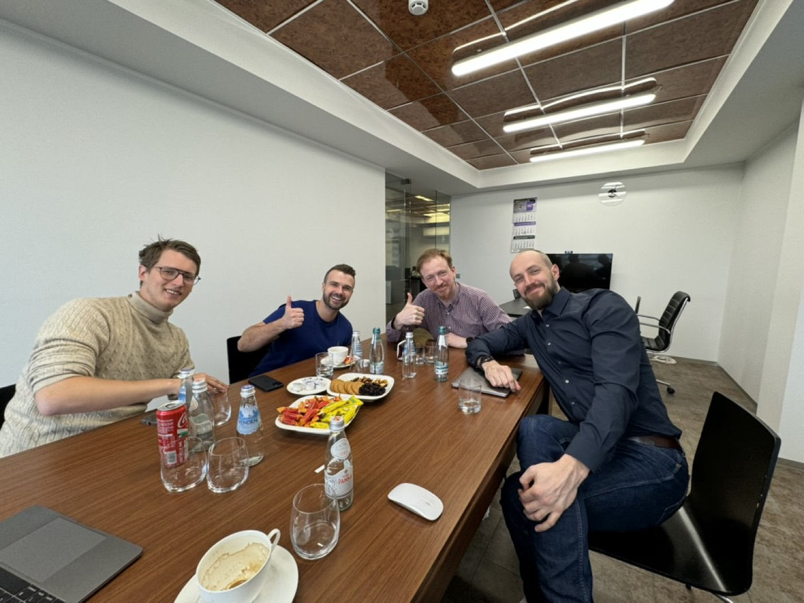
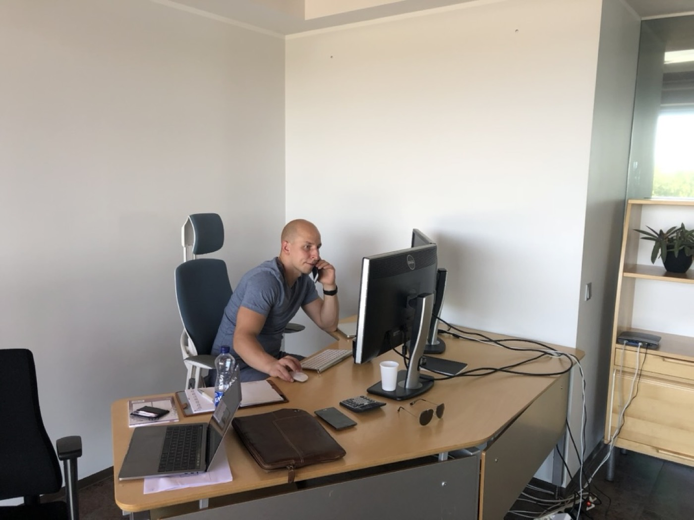
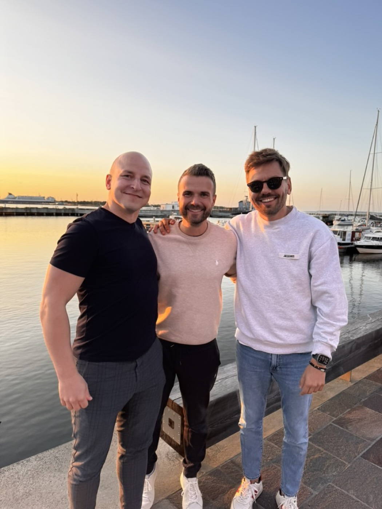
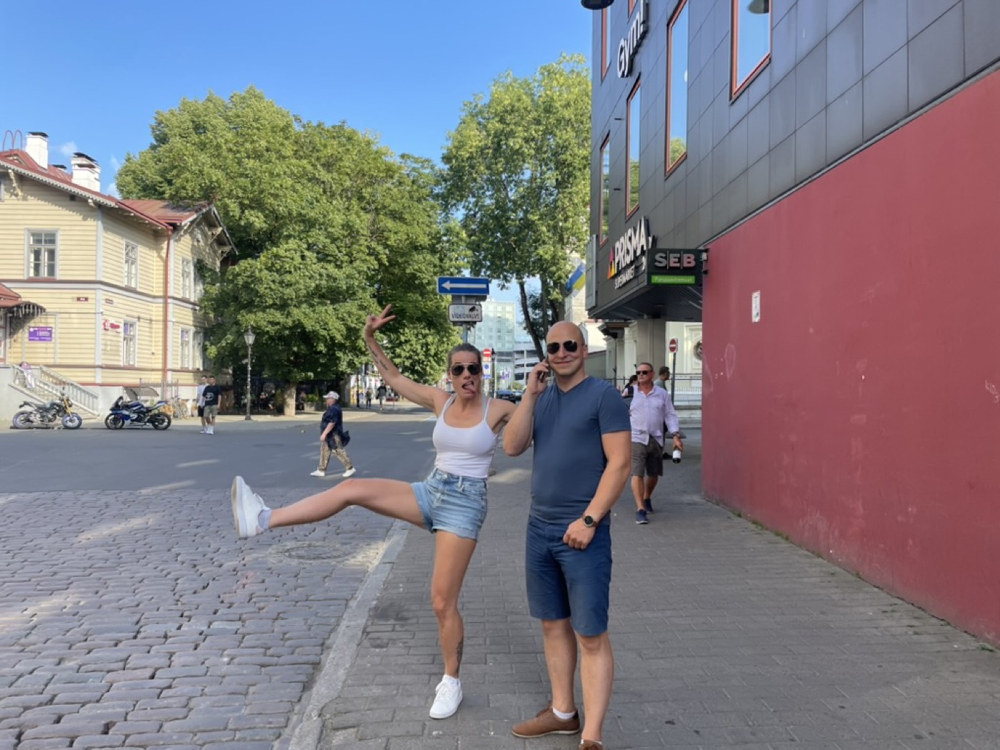
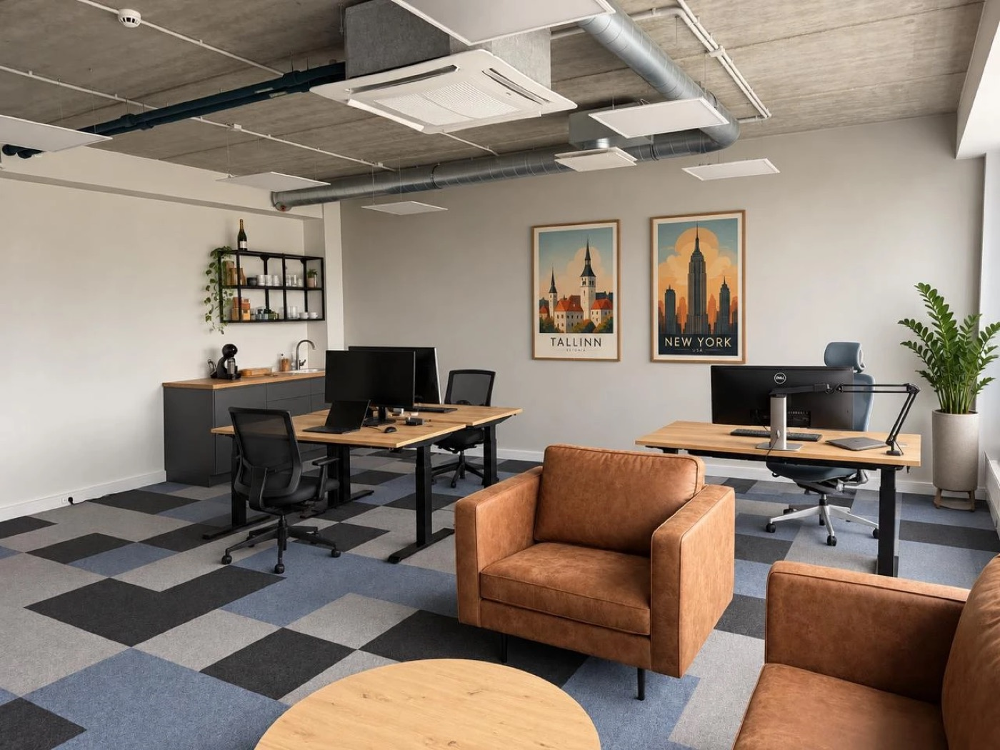
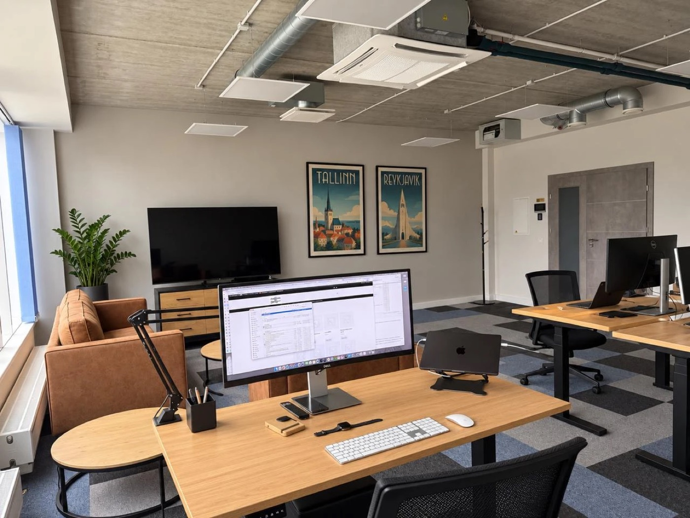
Glósur · 1 mínMyndirnar tala sjálfar. Ein saga úr einni mynd er nóg, salurinn þarf ekki að vita hver er hver. Tvær síðustu eru skrifstofan í Tallinn, sem er enn í notkun.
Yfir í vefinn
Reykjavík Digital
Stofnað2017
Byrjaði semHliðarverkefni
Fyrsti vefurinnGrillhúsið í Vestmannaeyjum, á undan Reykjavík Digital
SérhæfingVefþróun, netverslanir og leitarvélabestun
Við smíðuðum vefi fyrir íslensk fyrirtæki og stofnanir: allt frá kynningarvefjum upp í sérsmíðuð kerfi.
Glósur · 1 mínStutt: 2017 sneristu að vefnum og fyrsti vefurinn var Grillhúsið í Vestmannaeyjum. Ekki fara of djúpt, verkefnin koma í lokin.
Af hverju að skipta um nafn
Nafnið var farið að vinna gegn okkur
Reykjavík Digital er langt og erfitt nafn. Það var sífellt misritað og við vorum alltaf að leiðrétta það.
Fyrirtæki með Digital eða Reykjavík í nafninu eru orðin mörg. Við vorum farin að renna saman við þau.
Ákvörðunin var tekin 2024 og hefur verið í hægri þróun síðan.
Glósur · 2 mínAnna bað sérstaklega um þennan kafla. Tveir punktar duga: nafnið var langt og við vorum farin að renna saman við alla hina. Ákvörðunin var tekin 2024.
Glósur · 1 mínGlæran byrjar á Reykjavík Digital og bíður. Þegar þú ert tilbúinn ýtirðu á hægri örina: merkið skiptir um ham, konfettíið springur og fagnaðarlætin koma. Þegiðu á meðan. Næsta ýting flettir áfram.
Nýja nafnið
Nafnið les á tvo vegu: REYkjavík digiTAL, gamla nafnið stytt, og REYkjavík TALlinn, borgirnar tvær sem við vinnum í. Stutt, auðvelt að stafa og virkar jafn vel á ensku.
REYkjavík+digiTAL
REYkjavík+TALlinn
=Reytal
Hannað afÍsak Winther
MerkiðREY stendur upprétt, TAL snýr við: tvær borgir, tvær áttir, eitt nafn
Vefurinnreytal.is, í loftinu 2026
Glósur · 2 mínNafnið útskýrt: REYkjavík digiTAL og REYkjavík TALlinn. Bentu á flippið, REY stendur upprétt og TAL snýr við. Sama mótíf gengur í gegnum allan vefinn.
Nýi vefurinn
reytal.is
Nýr vefur fylgdi nafninu: hann er í loftinu og við höldum áfram að þróa hann.
reytal.is
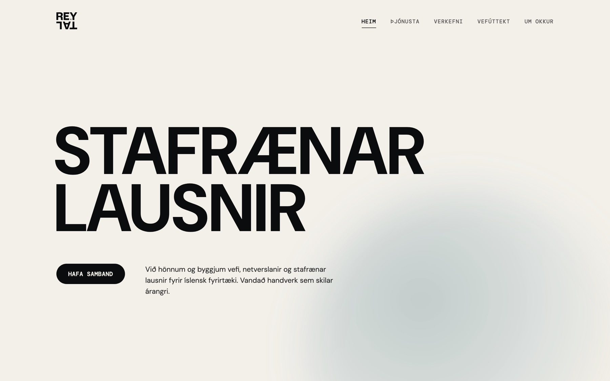
reytal.is/vefuttekt
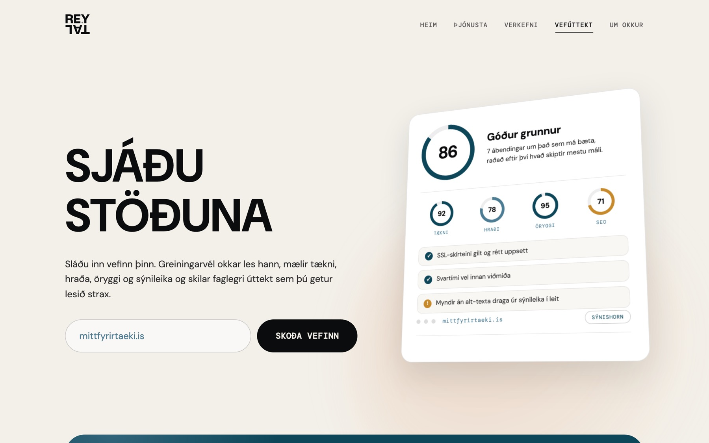
Glósur · 1 mínEf netið í salnum er traust er langbest að opna reytal.is sjálfan og skrolla í gegnum vefinn í stað skjáskotanna.
Þjónustan
Hvað bjóðum við upp á
Vefsíður og vefkerfiSérsniðið frá grunni og tæknin valin eftir verkefninu, hvort sem það er WordPress eða sérsmíðað kerfi.
NetverslanirSala á netinu, greiðslur, lager og tengingar við kerfin sem fyrirtækið notar.
Hönnun og vörumerkiFrá wireframe að fullkláraðri ásýnd, með notendaupplifun í forgrunni.
Leitarvélabestun, SEOTæknileg bestun, efnisstefna og mælingar sem sýna hvað skilar umferð.
Sýnileiki í gervigreind, GEOAð vefurinn skili sér í svörum ChatGPT, Gemini og Perplexity, ekki bara Google.
Gervigreind og sjálfvirkniSamþættingar og sjálfvirkni sem spara tíma í daglegum rekstri.
Hýsing og reksturVöktun, afritun og öryggisuppfærslur allt árið.
VefúttektirGreiningarvélin okkar les vefinn og raðar því sem má bæta eftir vægi.
Glósur · 2 mínEkki lesa listann upp. Bentu á tvennt sem salurinn þekkir ekki: GEO og vefúttektina. Hitt skilja allir strax.
Teymið
Hverjir vinna með okkur
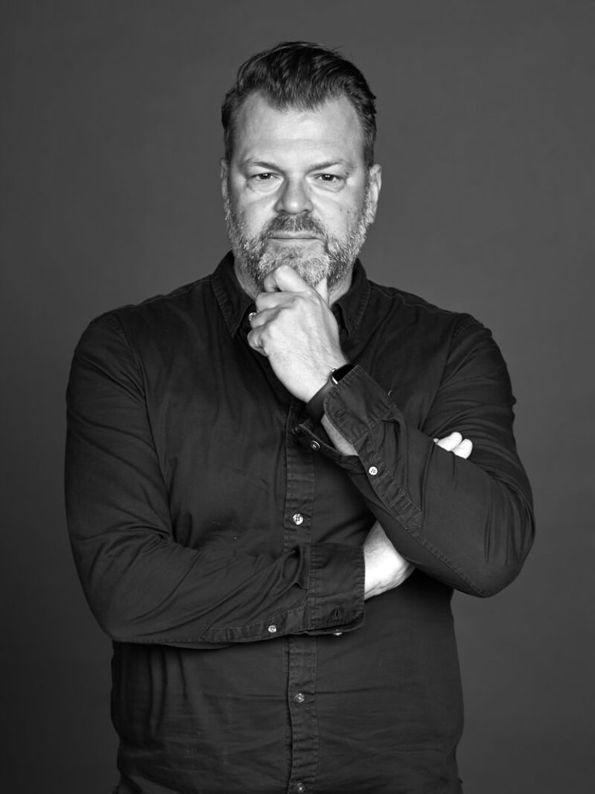
Jón HaukurVerkefnastjóri
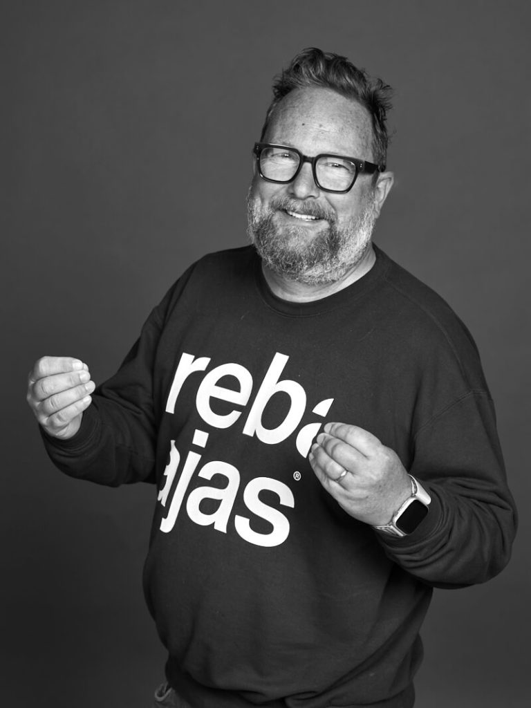
ÍsakHönnuður
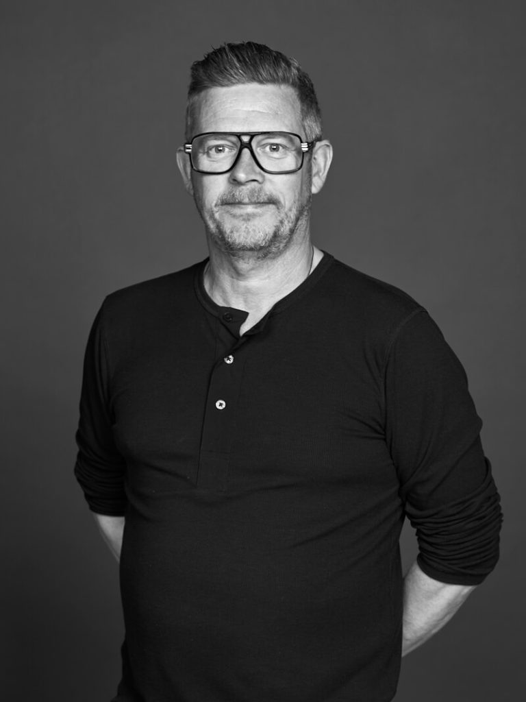
PéturHönnuður
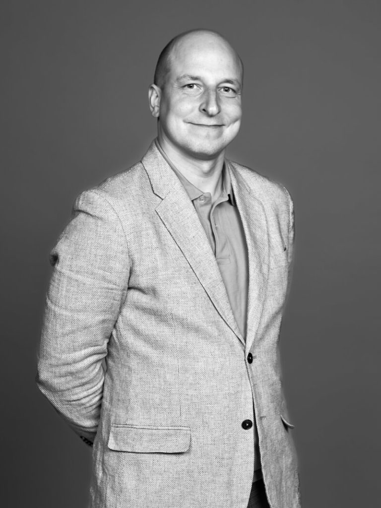
MikkForritari
DaníelForritari
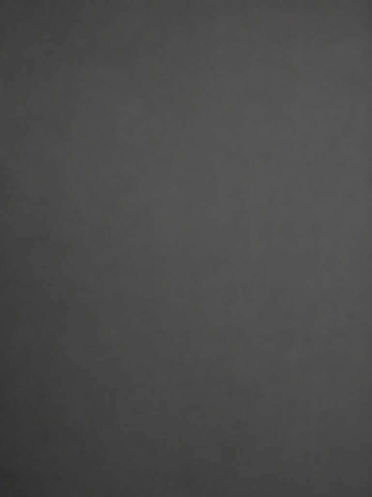
EinarForritari
DmitriForritari
IvanForritari
AlekseiForritari
HannesForritari
DavíðKerfisstjóri
Glósur · 2 mínEllefu manns. Nefndu þá sem skipta máli fyrir samstarfið, ekki alla í röð.
Hver er Mikk
Mikk Suits
HvaðanEistland, Tallinn
Saman síðan2010
GerirForritari
Glósur · 1 mínEf hann er í salnum, gefðu honum orðið í eina mínútu. Annars slepptu glærunni og flettu beint áfram.
Systurfélagið
Veföld sér um reksturinn
Vefur er ekki búinn þegar hann fer í loftið. Veföld sér um tæknilegan rekstur vefja, forrita og gagnagrunna: hýsingu, uppfærslur, vöktun, afrit og vefflutninga, dag eftir dag.
Frá2014
HvaðHýsing, umsjón, öryggi, afrit, hraðabestun og skýjalausnir
Glósur · 2 mínSysturfélagið sem tekur við rekstrinum eftir að verkefni fer í loftið. Þetta svarar spurningunni sem kemur alltaf: hver sér um vefinn eftir á? Ártalið 2014 er þegar lénið var skráð, lagaðu það ef félagið telur annað upphafsár.
Það sem við erum að brasa
Greiningarvél sem les íslenska vefi
Á reytal.is/vefuttekt slærðu inn lén og færð úttekt á tækni, hraða, öryggi og sýnileika á innan við mínútu. Ekkert kreditkort, engin skráning.
35.720
Íslenskir vefir í vélinni
< 1 mín
Frá léni í úttekt
Glósur · 1 mínÞetta er sá hluti sem fólk man eftir: við byggðum tól sem skannar íslenska vefinn. Bjóddu salnum að prófa á sínum eigin vef eftir á.
Úr vélinni
Það sem vélin sér
wisdom · yfirlit
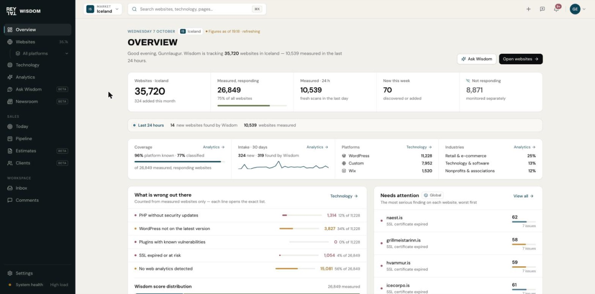
wisdom · innsýn
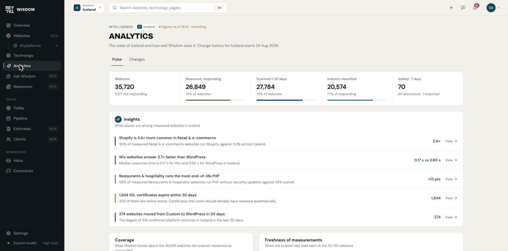
Veitingageirinn keyrir mest af úreltu PHP: 58% af vefjum hans á móti 45% að meðaltali.
Wix vefir svara 3,7 sinnum hraðar en WordPress, 0,17 sekúndur á móti 0,65.
1.844 SSL skírteini renna út á næstu 30 dögum, 203 þeirra í netverslunum.
Glósur · 1 mínHér sýnirðu vélina sjálfa, ekki bara tölur um hana. Veldu eitt innsýnisatriði og lestu það upp orðrétt, til dæmis Wix og WordPress hraðamuninn. Skjáskotin eru tekin 7. október 2026 af Íslandsmarkaði, taktu ný ef eitthvað hefur breyst.
Íslenski vefurinn í tölum
Það sem gögnin segja okkur
Þegar maður skannar tugþúsundir íslenskra vefja kemur ýmislegt í ljós sem enginn hefur tekið saman áður.
35.720
Vefir á .is í Wisdom
42%
Á WordPress
30%
Sérsmíðuð kerfi
34%
WordPress vefir ekki á nýjustu útgáfu
96%
Með gilt SSL
56%
Engar mælingar á vefnum
Glósur · 1 mínAllar tölurnar eru úr Wisdom, Íslandsmarkaði, 7. október 2026, og eiga við þá 26.849 vefi sem vélin náði að mæla. Ef einhver spyr hvaðan þær koma er svarið einfalt: úr okkar eigin skönnun. Uppfærðu þær daginn fyrir kynninguna, þær hreyfast. Segðu eina tölu í einu, ekki lesa töfluna upp.
Það sem við gerum
Valin verkefni
Orkureiturinn · Söluvefur ársins 2025VerkísLíttupp · NetöryggismiðstöðMarch Forward · UN Women
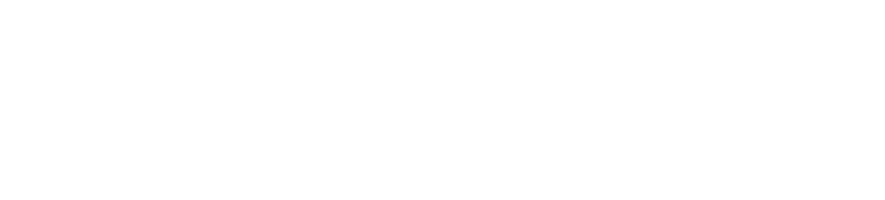
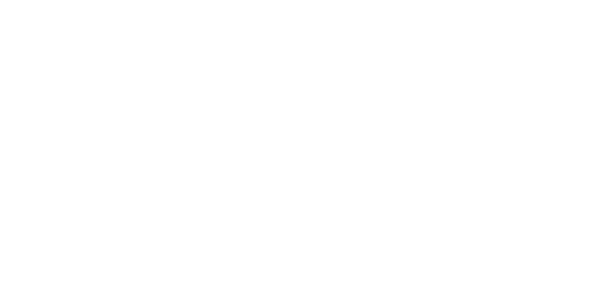
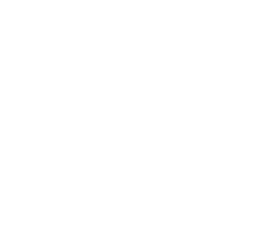
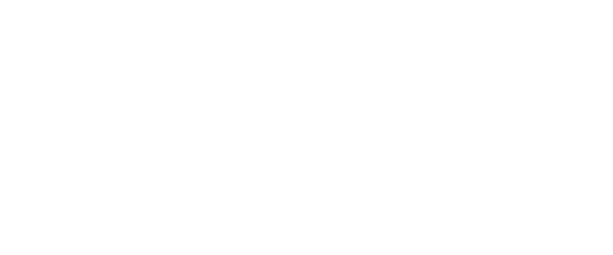
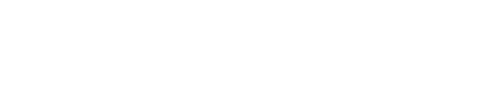
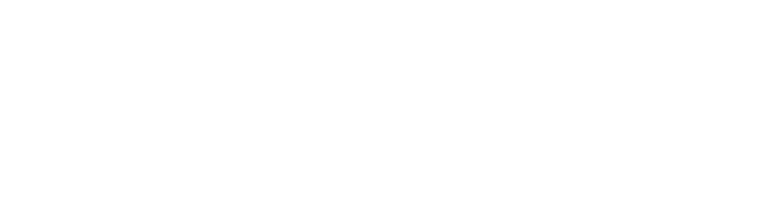
Glósur · 2 mínBesta efnið fyrst. Orkureiturinn er söluvefur ársins 2025 hjá SVEF, unninn með Pipar og TBWA, og March Forward er líka þeirra verkefni, svo salurinn þekkir það. Myndböndin spilast sjálf þegar glæran birtist.
Verkefni frá Reykjavík Digital
Fleiri verkefni
kirkjan.is
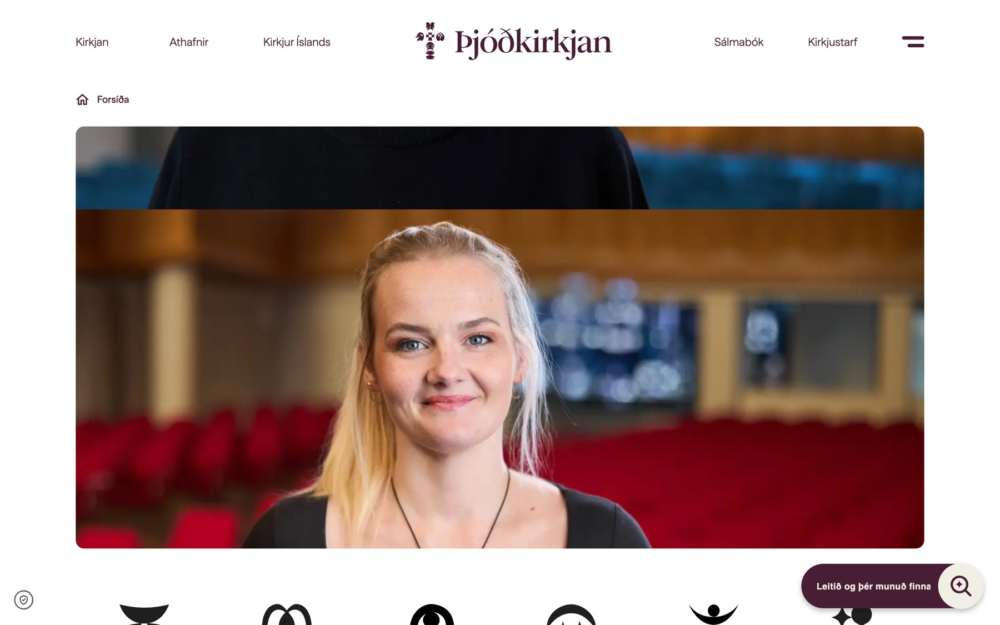
oskaskrin.is
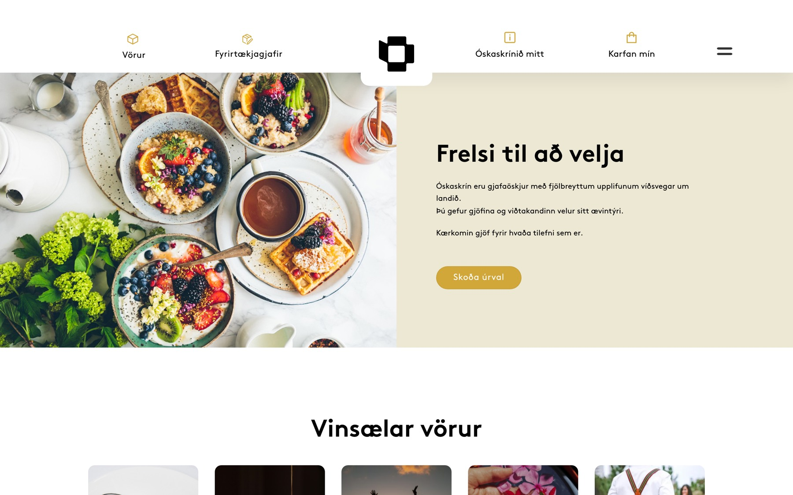
sigurros.com
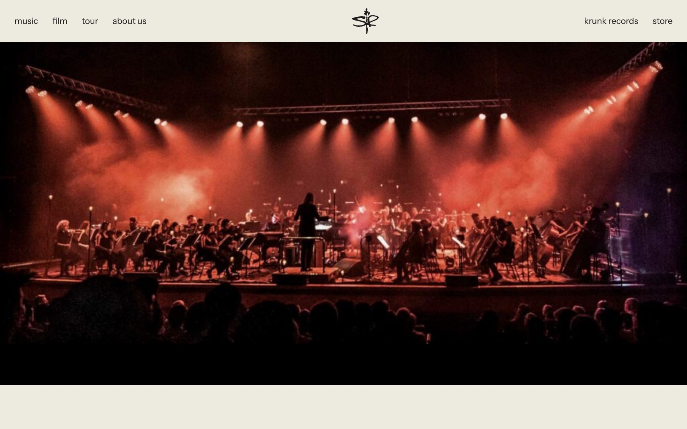
takkkronur.is
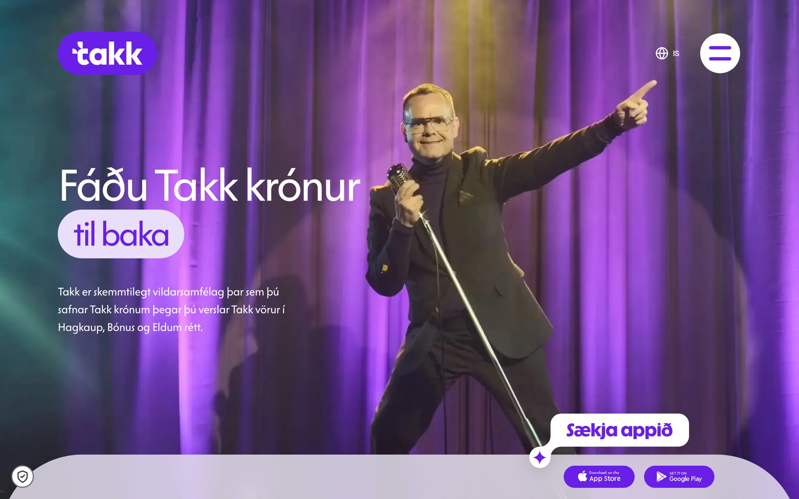
lbhi.is
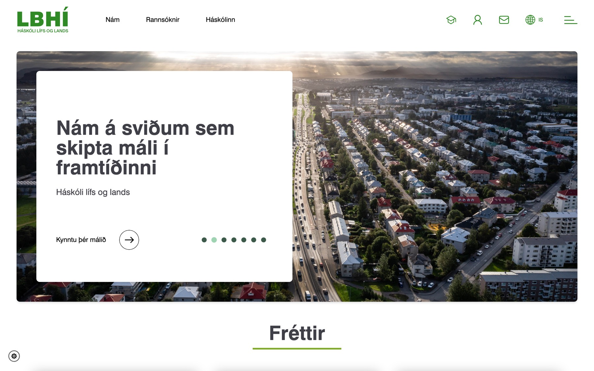
klasi.is
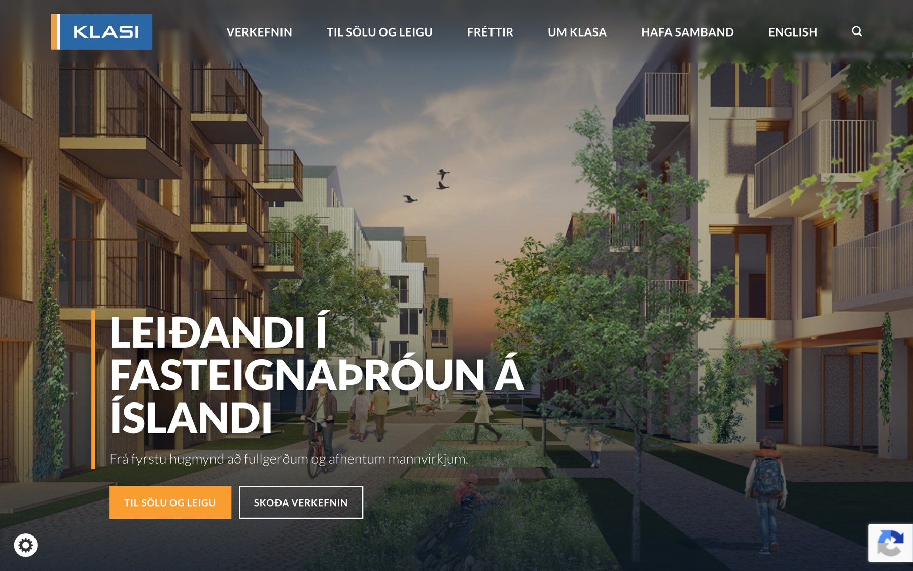
Glósur · 2 mínOg svo breiddin: eldri verkefni, flest frá Reykjavík Digital árunum. Veldu tvo vefi og segðu eina sögu um hvorn, ekki lýsa öllu sem var gert.
Takk fyrirSpurningar?
Glósur · 1 mínBoðið: prófið vefúttektina á ykkar eigin vef, við förum yfir niðurstöðurnar með hverjum sem vill. Svo spurningar.